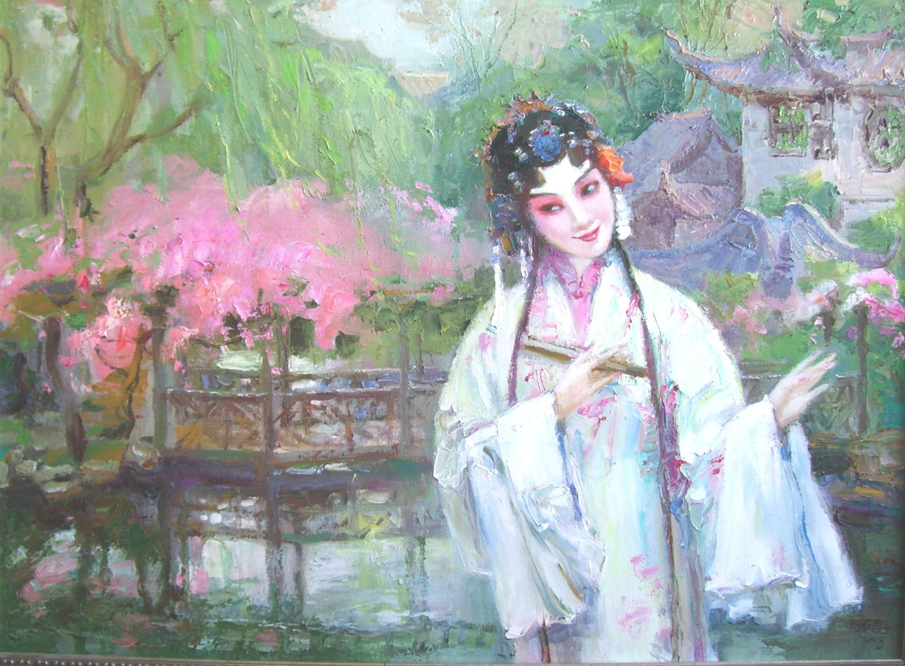
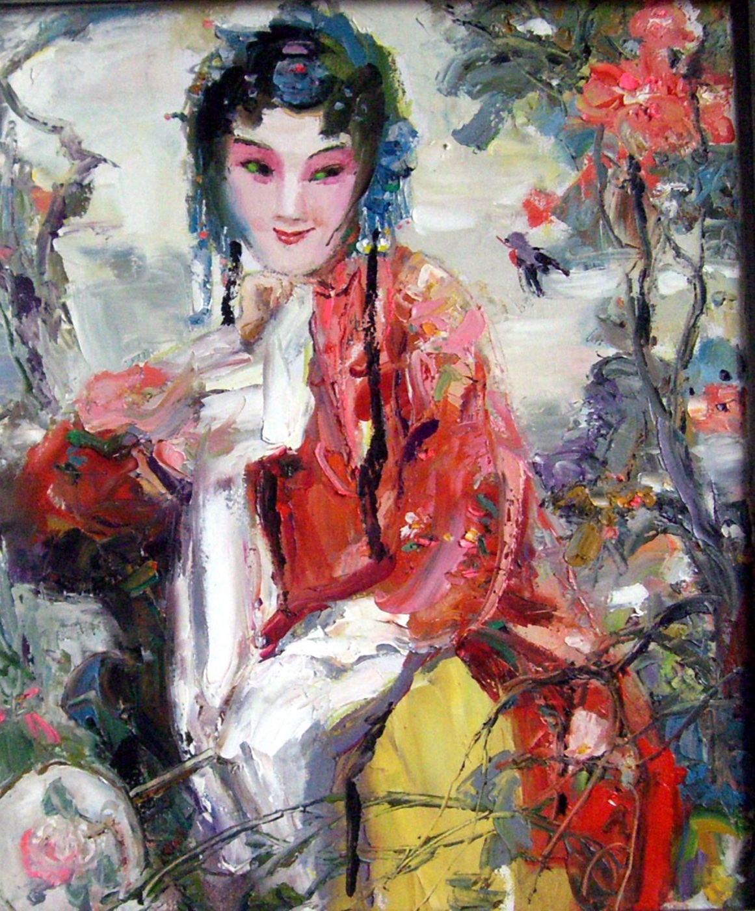
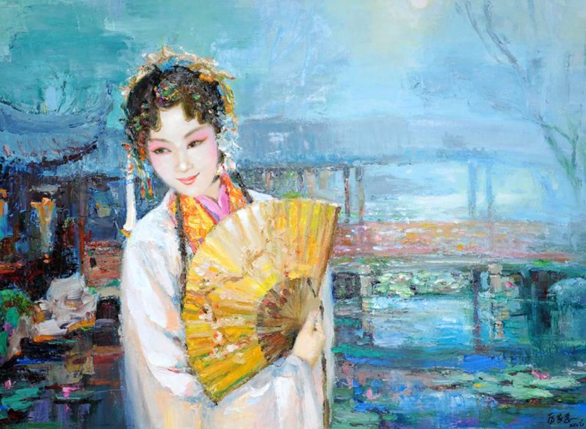

My father, opera painter
Li Jia'en was born in Shanghai in 1947. He paints Kunqu and opera figures and Jiangnan gardens with oil paint and a palette knife.
From Jiangnan life to opera figures
Li Jia'en is a professional painter, a member of the Shenzhen branch of the China Artists Association, and lives in Shenzhen.
He grew up in Jiangnan, shaped by folk arts and opera. His work pursues human feeling, atmosphere and beauty.
His paintings were shown in Geneva in 2002. He has since used oil paint to depict Chinese opera figures and classical Jiangnan gardens, developing a distinctive style through several solo exhibitions.
In January 2006, Li Jia'en held an exhibition of Kunqu figure paintings. When playwright Pai Hsien-yung brought the Kunqu production The Peony Pavilion to Shenzhen, he praised the figures. Newspapers and television covered the work. The paintings have sold well at auction and are held by galleries and collectors in Hong Kong, Taiwan, Singapore and elsewhere.

Figures and gardens
The opera figure enters a garden in full bloom; pose and landscape together create the painting's poetic space.
The painter places a youthful, elegant opera woman in a vivid garden beside the Peony Pavilion and its peony railing. The setting adds poetry to the scene.
Gesture and expression convey quiet shyness and subtle feeling. Seated or leaning, each figure is at ease yet proper, carrying the clarity, youth, depth and beauty associated with Jiangnan women.
Sweet faces, rich colour, flowing lines and the classical garden illuminate one another, creating a dreamlike and emotionally intense atmosphere.

Figures in realism and abstraction
Costume folds and headdress are not copied in full; they are rebuilt through knife marks and surface texture.
The whole picture reads as realistic, but folds, patterns and ornaments are abstracted to heighten expression.
Strong colour and freely swept strokes evoke the operatic presence. He abandoned the brush and painted entirely with a palette knife.
Knife movement and texture follow affection and imagination rather than objective reality. Two- and three-dimensional space shift into one another while the whole atmosphere holds together.
The rugged landscape and the face are both cut with a palette knife.

Oil paint and Chinese painting
The material is Western; the spirit and movement come from Chinese cultural tradition.
Western oil painting stresses objective reality; Chinese painting emphasises spirit, atmosphere and subjective colour and line. Li combines the two, using oil materials to express traditional Chinese culture.
Chinese folk-art elements come into play through bold pure colour and free, decisive handling. Even in oil, the stroke leaves feibai, a broken-white passage associated with ink, giving the work a distinctly Chinese character.
Narcissus · oil on canvas · 76 × 61 cm

Oil paint, knife and ink
He uses oil paint and a palette knife, yet expresses the spirit of Chinese culture. Flecks of white and the resonance of ink remain in the oil.
Two further paintings
All seven images on this page were supplied by the family. Open an image to see it larger.